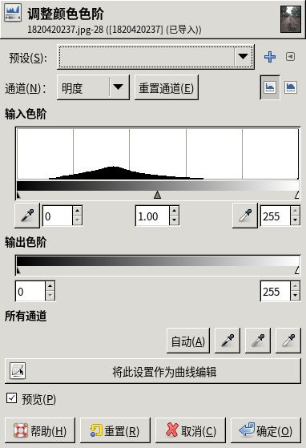

照片处理

文章目录
我们拍了一张照片，可能不是很称我们的心意。我们把照片改成我们满意的图片，就要学会照片处理。
基础知识
色
我们肉眼看到的发光物或反光物的一种视觉现象，瞎子看不到色。
人们对色的喜爱不一样，有人喜欢白色，有人喜欢红色。
像素图与矢量图
像素图由 色点 组成的，所以对图像的放大缩小会造成图像失真。我们用相机拍出的就是像素图。
矢量图由矢量软件构造，放大缩小会重新渲染图像，所以不会失真，但现在相机拍不出这种图。
分辨率
分辨率是单位面积的色点，单位为PPI（Pixels Per Inch），5PPI表示每平方英寸有5*5个像素，分辨率越高像素图越清晰度。
色的合成
自然界中的颜色亿亿万，但在计算机上，由于科技的限制，只能表示色的一部分，有如下几种合成方式。
-
色相、饱和度和明度系统 (HSB) [ 基于人眼的直接感官，就像我们常说的深蓝呀，品红啊，就是 HSB模式 ]
-
红绿蓝三原色(RGB) [ 发光体，显示器用来合成颜色的模式，红绿合成黄，稍微红稍微绿合成稍微黄，这样表示的颜色范围就多啦 ] [ 加色模式，发光原理，越变越亮 ]
-
RGBA [ 图像软件使用的，alpha通道用来作为选区的 ]
-
青、洋紅、黄、黑四元色 (CMYK) [ 用在印刷里面调色用的 ] [ 减色模式，反射原理 ，越变越黑 ]
异色，不同颜色模式下，不能表示的颜色
图像基础
有了基础知识，就可以处理照片了，但一般不推荐直接在照片上改，使用一些软件技术，可以更好的修改图片。
图层
图层就是透明的纸，修改照片时，可以把图层覆盖在照片上，在图层上操作，就不会破坏原图了。
灰度
灰度就相当于带了一副墨镜看照片一样，颜色变得灰蒙蒙。
通道
图像合成中，不同色的量， 在 RGB 合成模式中，有3个通道，而 CMYK 图像则默认有四个通道
整体调整
我们拍的图，可能光线不太好，或者相机不太好，或者技术不到家，都会造成图片的质量不好看。这时，我们可以用图片处理软件的整体调节功能进行处理。
亮度调节
同一个场景在不同的光线下，比如白天或晚上，照片亮度是不一样的，所以一般要进行 亮度( 光线 )调节。

一般用颜色里的色阶或曲线调节下就可以了
滤镜
滤镜相当于有各种风格的哈哈镜，每个滤镜会产生不同的效果。
局部调整
当我们修改照片的某个局部时，最好把要修改的地方 画个圈 (选区)，那么在区域外的东西就不会被修改到了。
蒙板
蒙板就是选区的外部区域，跟选区是互补关系。
文章作者 阿明
上次更新 2020-01-25